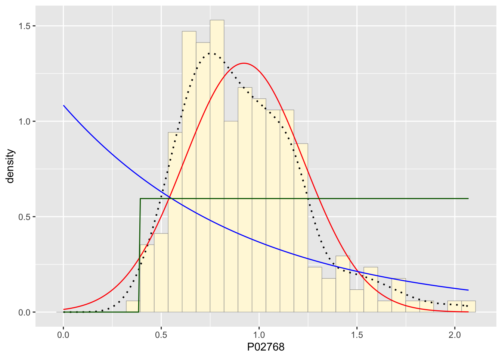
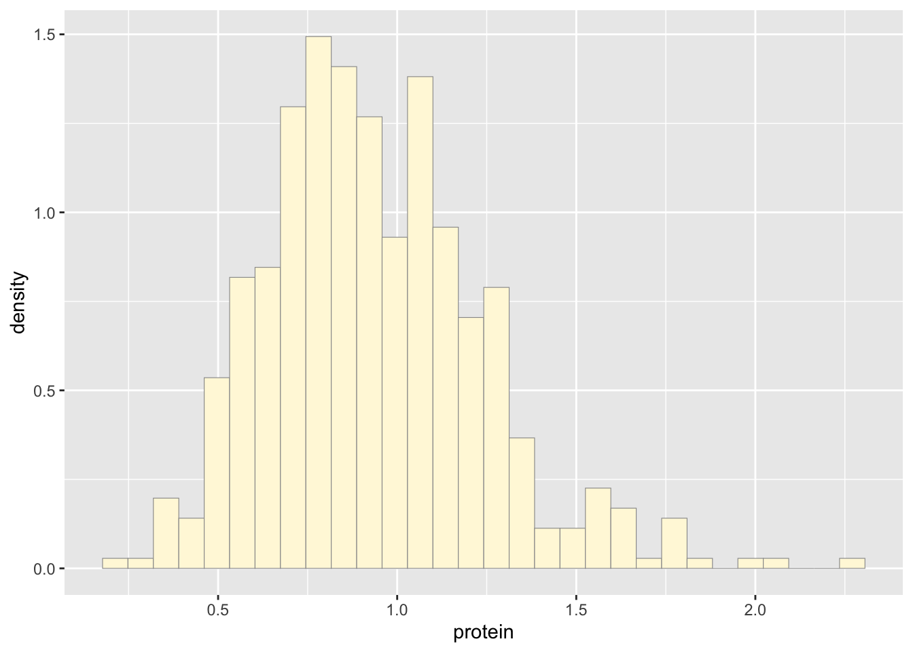
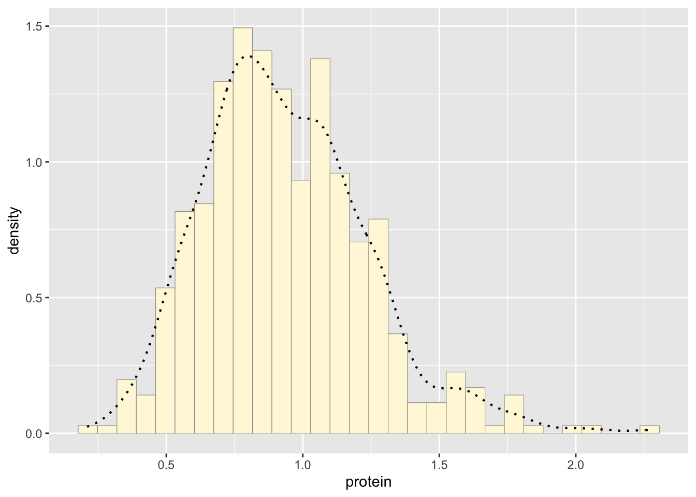
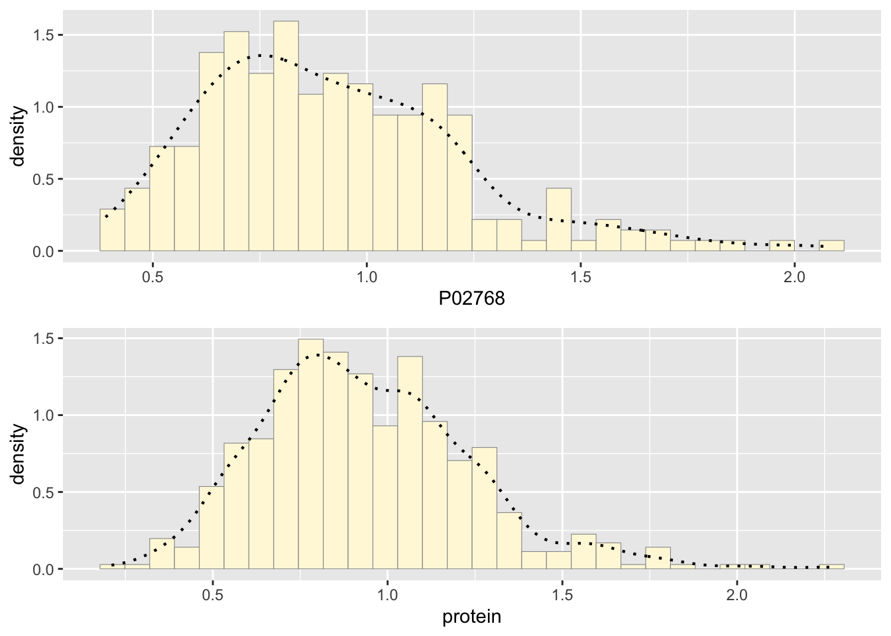

1 & 2. Reading in my data and running sample code - I made annotations in an R document when doing the work for the homework. I used a study on protein density in CSF of dementia patients. The data I used for visualization is the relative density of human albumin. There were many proteins recorded in the data.
z <- read.table("Proteo.csv",header=TRUE,sep=",")
str(z)
summary(z)library(ggplot2)
library(MASS)##
## Attaching package: 'MASS'## The following object is masked from 'package:dplyr':
##
## select## The following object is masked from 'package:patchwork':
##
## area#P02768
p1 <- ggplot(data=z, aes(x=P02768, y=..density..)) +
geom_histogram(color="grey60",fill="cornsilk",size=0.2)
print(p1)## Warning: The dot-dot notation (`..density..`) was deprecated in ggplot2 3.4.0.
## ℹ Please use `after_stat(density)` instead.
## This warning is displayed once every 8 hours.
## Call `lifecycle::last_lifecycle_warnings()` to see where this warning was
## generated.## `stat_bin()` using `bins = 30`. Pick better value with `binwidth`.p1 <- p1 + geom_density(linetype="dotted",size=0.75)
print(p1)## `stat_bin()` using `bins = 30`. Pick better value with `binwidth`.normPars <- fitdistr(z$P02768,"normal")
print(normPars)## mean sd
## 0.92254429 0.30590405
## (0.01982881) (0.01402109)str(normPars)## List of 5
## $ estimate: Named num [1:2] 0.923 0.306
## ..- attr(*, "names")= chr [1:2] "mean" "sd"
## $ sd : Named num [1:2] 0.0198 0.014
## ..- attr(*, "names")= chr [1:2] "mean" "sd"
## $ vcov : num [1:2, 1:2] 0.000393 0 0 0.000197
## ..- attr(*, "dimnames")=List of 2
## .. ..$ : chr [1:2] "mean" "sd"
## .. ..$ : chr [1:2] "mean" "sd"
## $ n : int 238
## $ loglik : num -55.8
## - attr(*, "class")= chr "fitdistr"normPars$estimate["mean"] # note structure of getting a named attribute## mean
## 0.9225443meanML <- normPars$estimate["mean"]
sdML <- normPars$estimate["sd"]
xval <- seq(0,max(z$P02768),len=length(z$P02768))
stat <- stat_function(aes(x = xval, y = ..y..), fun = dnorm, colour="red", n = length(z$P02768), args = list(mean = meanML, sd = sdML))
p1 + stat## `stat_bin()` using `bins = 30`. Pick better value with `binwidth`.expoPars <- fitdistr(z$P02768,"exponential")
rateML <- expoPars$estimate["rate"]
stat2 <- stat_function(aes(x = xval, y = ..y..), fun = dexp, colour="blue", n = length(z$P02768), args = list(rate=rateML))
p1 + stat + stat2## `stat_bin()` using `bins = 30`. Pick better value with `binwidth`.stat3 <- stat_function(aes(x = xval, y = ..y..), fun = dunif, colour="darkgreen", n = length(z$P02768), args = list(min=min(z$P02768), max=max(z$P02768)))
p1 + stat + stat2 + stat3## `stat_bin()` using `bins = 30`. Pick better value with `binwidth`.
gammaPars <- fitdistr(z$P02768,"gamma")
shapeML <- gammaPars$estimate["shape"]
rateML <- gammaPars$estimate["rate"]
###########
stat4 <- stat_function(aes(x = xval, y = ..y..), fun = dgamma, colour="brown", n = length(z$P02768), args = list(shape=shapeML, rate=rateML))
p1 + stat + stat2 + stat3 + stat4## `stat_bin()` using `bins = 30`. Pick better value with `binwidth`.############
pSpecial <- ggplot(data=z, aes(x=P02768/(max(P02768 + 0.1)), y=..density..)) +
geom_histogram(color="grey60",fill="cornsilk",size=0.2) +
xlim(c(0,1)) +
geom_density(size=0.75,linetype="dotted")
betaPars <- fitdistr(x=z$P02768/max(z$P02768 + 0.1),start=list(shape1=1,shape2=2),"beta")## Warning in densfun(x, parm[1], parm[2], ...): NaNs produced## Warning in densfun(x, parm[1], parm[2], ...): NaNs produced
## Warning in densfun(x, parm[1], parm[2], ...): NaNs producedshape1ML <- betaPars$estimate["shape1"]
shape2ML <- betaPars$estimate["shape2"]
statSpecial <- stat_function(aes(x = xval, y = ..y..), fun = dbeta, colour="orchid", n = length(z$P02768), args = list(shape1=shape1ML,shape2=shape2ML))
pSpecial + statSpecial## `stat_bin()` using `bins = 30`. Pick better value with `binwidth`.## Warning: Removed 2 rows containing missing values or values outside the scale range
## (`geom_bar()`).The best fitting curve upon running my data was the damma distribution. It matched around half the density dots almost perfectly with the main difference being the top of the hump not matching well because of natural variation I would guess.
Creating new data from the parameters of the distribution.
newgam <- data.frame(rgamma(n=500,shape=9.66271,rate=10.47398))
names(newgam) <- "protein"
p2 <- ggplot(data=newgam, aes(x=protein, y=..density..)) +
geom_histogram(color="grey60",fill="cornsilk",size=0.2)
print(p2)## `stat_bin()` using `bins = 30`. Pick better value with `binwidth`.
p2 <- p2 + geom_density(linetype="dotted",size=0.75)
print(p2)## `stat_bin()` using `bins = 30`. Pick better value with `binwidth`.
library(gridExtra) #i remember using this in ecology##
## Attaching package: 'gridExtra'
##
## The following object is masked from 'package:dplyr':
##
## combinegrid.arrange(p1,p2, ncol=1)## `stat_bin()` using `bins = 30`. Pick better value with `binwidth`.
## `stat_bin()` using `bins = 30`. Pick better value with `binwidth`.